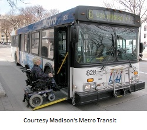

In accordance with the spirit and intent of the Americans with Disabilities Act, move toward the long term goal of
fully accessible fixed route service as the primary transit service for all people in Madison, regardless of age or
disability. - p. 35 of Staff Report on Madison Metro+Plus, 1991
So if the goal is to minimize it, why does Metros paratransit ridership continue to grow every year, often at a much
faster rate than Madisons population overall? And why, contrary to the image conveyed in many pictures, are
roughly two thirds of the Metro+Plus rides serving ambulatory people? The simple fact is that we have no idea how
many people in Madison truly need Metro+Plus, how many disabled people actually ride Mainline buses or why some
disabled people ride Metro+Plus instead of Mainline.
After a long hiatus, Metro is again performing in-person assessments to determine eligibility for its paratransit
services, and it is finding that many people who would have been considered eligible under the old system are in fact
able to ride Mainline. What does this mean?
But let us start at the beginning. It may be difficult for some to even imagine what life was like in Madison 40 or more
years ago for someone with a serious mobility limitation. If you wanted to be independent but could not drive your
own car or van, get to and from a bus stop, recognize the bus by sight or sound, climb stairs into the bus, or make
necessary transfers, you were simply out of luck.
So what if the Urban Mass Transportation Act of 1964 stated that elderly and handicapped persons have the same
right as other persons to utilize mass transportation facilities and services? Most cities would not even begin to
make transit more accessible until after the passage in 1990 of the Americans with Disabilities Act.
Fortunately here in Madison, a determined group of University of Wisconsin students called the Handicapped
Students of Wisconsin (HSW) was not about to wait. What they started in 1976 became adopted by the City of
Madison into its regular operations as a special transportation service for elderly and handicapped people (E/H) by
1979. That service was later called Metro+Plus, a name that persists to this day. The positive quality of the name was
meant to convey recognition and dignity.
Since everything was so new, people experimented with ways they hoped would make the system more efficient and
effective. One characteristic in common however was that all those ways involved separate service rather than
incorporating accessible features into the regular buses. Some people may recognize this as separate but equal.
In 1990, the federal government finally adopted the civil rights Americans with Disabilities Act.
The Americans with Disabilities Act (ADA) gives civil rights protections to individuals with disabilities that
are like those provided to individuals on the basis of race, sex national origin, and religion. It guarantees
equal opportunity for individuals with disabilities in employment, public accommodations,
transportation, State and local government services, and telecommunications. (Bold added)
Consistent with the intent of the new law, Madison made one if its long-term transportation goals to be that of making
regular Mainline buses as accessible as possible. New bus purchases were always for accessible buses so that the fleet
eventually became totally accessible. At first, the only accessible buses available were ones with stairs that converted
into lifts that brought people up to the buss high floor. Later, accessible buses could kneel down to the curb so people
could use a ramp instead of the more awkward lift, although this still only works above 20 degrees (water seeps into,
then freezes and jams, the hydraulic system when it gets colder). Additional features such as brighter banners,
automatic bus stop announcements in both written and auditory form, and bus information in accessible formats such
as braille, large print and special web site features have made Mainline buses all the more accessible to people with
various limitations. Service animals are welcome, and personal attendants ride the bus at no additional charge.
At the same time, Metro+Plus has continued to provide service to people unable to use Mainline buses.
Forty years out (23 since the ADA), many problems still remain. For one, although the buses themselves may be
accessible, disabled riders need bus stops to be accessible too. Common barriers include my pet peeve of snow piles
in winter, the absence of needed sidewalks or curb cuts, inclines that are too steep, dirt that turns into soft mud when
it rains, and for the last several years now, the elimination of bus stops in a misguided effort to speed up travel. How
accessible can a non-existent stop be, after all?
There are generational and informational problems as well. Whether based on reality or more a matter of prejudice,
many older people who ride Metro+Plus will not ride Mainline. They consider it too unsafe or demeaning. Others
who need Metro+Plus on occasion do not seem to know that they can ride the mainline bus on better days without
jeopardizing their eligibility for Metro+Plus when they need it. They do not seem to realize the riding Mainline
benefits both themselves AND the community at large. Not only can they decide their travel spontaneously rather
having to reserve a ride the day before, but a Mainline bus ride only costs the taxpayer an average of one-sixth that of
a Metro+Plus ride.
So while having made huge strides forward, Madison still has a long way to go to achieving the goal set out more than
20 years ago of having an accessible fixed route service being the primary transit service for all people regardless of
age or disability.

 Madison Area Bus Advocates
Madison Area Bus Advocates